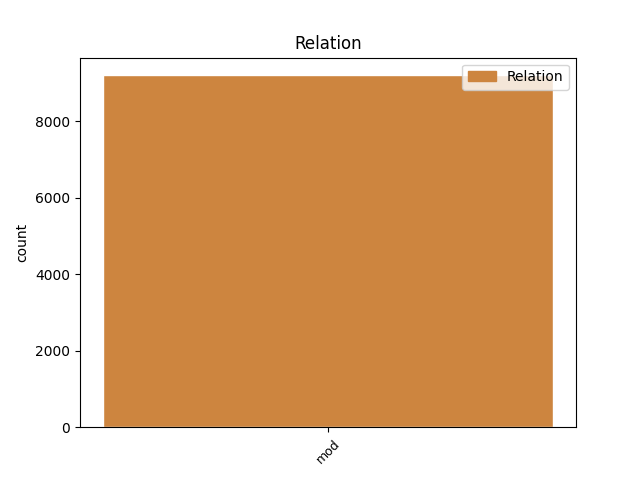
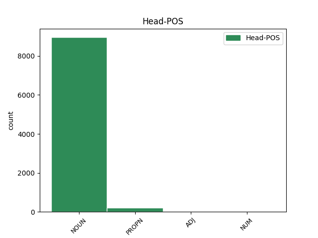
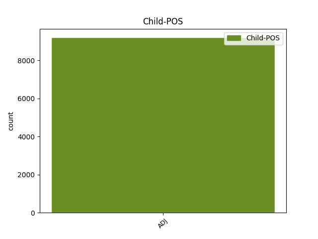

Distribution of features within this leaf



Agreement Rules sorted by frequency.
- When the dependent token is the modifer(mod) of the head token, and the head token is NOUN and the dependent token is ADJ.
1 KOČEVJE _ _ _ _ 0 _ _ _
2 Iz _ _ _ _ 0 _ _ _
3 Kočevja _ _ _ _ 0 _ _ _
4 proti _ _ _ _ 0 _ _ _
5 Ljubljani _ _ _ _ 0 _ _ _
6 v _ _ _ _ 0 _ _ _
7 prihodnje _ _ _ _ 0 _ _ _
8 ne _ _ _ _ 0 _ _ _
9 bodo _ _ _ _ 0 _ _ _
10 vozili _ _ _ _ 0 _ _ _
11 zgolj _ _ _ _ 0 _ _ _
12 les _ _ _ _ 0 _ _ _
13 , _ _ _ _ 0 _ _ _
14 neprecenljivo _ _ _ _ 0 _ _ _
15 bogastvo _ _ _ _ 0 _ _ _
16 poraščene _ _ _ _ 0 _ _ _
17 pokrajine _ _ _ _ 0 _ _ _
18 tik _ _ _ _ 0 _ _ _
19 ob _ _ _ _ 0 _ _ _
20 hrvaški _ _ _ _ 0 _ _ _
21 meji _ _ _ _ 0 _ _ _
22 , _ _ _ _ 0 _ _ _
23 gneča _ _ _ _ 0 _ _ _
24 na _ _ _ _ 0 _ _ _
25 cesti _ _ _ _ 0 _ _ _
26 bo _ _ _ _ 0 _ _ _
27 tudi _ _ _ _ 0 _ _ _
28 zaradi _ _ _ _ 0 _ _ _
29 povečane _ _ _ _ 0 _ _ _
30 zmogljivosti _ _ _ _ 0 _ _ _
31 pri _ _ _ _ 0 _ _ _
32 proizvodnji _ _ _ _ 0 _ _ _
33 najbolj _ _ _ _ 0 _ _ _
34 znanih _ _ _ _ 0 _ _ _
35 slovenskih slovenski ADJ Agpmpg Case=Gen|Degree=Pos|Gender=Masc|Number=Plur 36 mod _ Dep=36|Rel=Atr
36 sirov sir NOUN Ncmpg Case=Gen|Gender=Masc|Number=Plur 0 _ _ _
37 . _ _ _ _ 0 _ _ _
1 Udeležila _ _ _ _ 0 _ _ _
2 se _ _ _ _ 0 _ _ _
3 ga _ _ _ _ 0 _ _ _
4 je _ _ _ _ 0 _ _ _
5 in _ _ _ _ 0 _ _ _
6 se _ _ _ _ 0 _ _ _
7 kot _ _ _ _ 0 _ _ _
8 najboljša dober ADJ Agsfsn Case=Nom|Degree=Sup|Gender=Fem|Number=Sing 9 mod _ Dep=9|Rel=Atr
9 Slovenka Slovenka PROPN Npfsn Case=Nom|Gender=Fem|Number=Sing 0 _ _ _
10 uvrstila _ _ _ _ 0 _ _ _
11 na _ _ _ _ 0 _ _ _
12 deveto _ _ _ _ 0 _ _ _
13 mesto _ _ _ _ 0 _ _ _
14 . _ _ _ _ 0 _ _ _
1 Brežice _ _ _ _ 0 _ _ _
2 - _ _ _ _ 0 _ _ _
3 Stalna _ _ _ _ 0 _ _ _
4 mešana _ _ _ _ 0 _ _ _
5 hrvaško hrvaški ADJ Agpnsn Case=Nom|Degree=Pos|Gender=Neut|Number=Sing 6 mod _ Dep=6|Rel=Atr
6 slovenska slovenski ADJ Agpfsn Case=Nom|Degree=Pos|Gender=Fem|Number=Sing 0 _ _ _
7 komisija _ _ _ _ 0 _ _ _
8 , _ _ _ _ 0 _ _ _
9 ki _ _ _ _ 0 _ _ _
10 bo _ _ _ _ 0 _ _ _
11 skrbela _ _ _ _ 0 _ _ _
12 za _ _ _ _ 0 _ _ _
13 uveljavitev _ _ _ _ 0 _ _ _
14 določil _ _ _ _ 0 _ _ _
15 sporazuma _ _ _ _ 0 _ _ _
16 o _ _ _ _ 0 _ _ _
17 obmejnem _ _ _ _ 0 _ _ _
18 prometu _ _ _ _ 0 _ _ _
19 in _ _ _ _ 0 _ _ _
20 sodelovanju _ _ _ _ 0 _ _ _
21 ( _ _ _ _ 0 _ _ _
22 Sops _ _ _ _ 0 _ _ _
23 ) _ _ _ _ 0 _ _ _
24 na _ _ _ _ 0 _ _ _
25 naši _ _ _ _ 0 _ _ _
26 južni _ _ _ _ 0 _ _ _
27 meji _ _ _ _ 0 _ _ _
28 , _ _ _ _ 0 _ _ _
29 se _ _ _ _ 0 _ _ _
30 bo _ _ _ _ 0 _ _ _
31 drugič _ _ _ _ 0 _ _ _
32 sestala _ _ _ _ 0 _ _ _
33 v _ _ _ _ 0 _ _ _
34 začetku _ _ _ _ 0 _ _ _
35 prihodnjega _ _ _ _ 0 _ _ _
36 meseca _ _ _ _ 0 _ _ _
37 . _ _ _ _ 0 _ _ _
1 Vendar _ _ _ _ 0 _ _ _
2 je _ _ _ _ 0 _ _ _
3 zaenkrat _ _ _ _ 0 _ _ _
4 zasedeno _ _ _ _ 0 _ _ _
5 le _ _ _ _ 0 _ _ _
6 eno _ _ _ _ 0 _ _ _
7 od _ _ _ _ 0 _ _ _
8 teh _ _ _ _ 0 _ _ _
9 stanovanj _ _ _ _ 0 _ _ _
10 , _ _ _ _ 0 _ _ _
11 zato _ _ _ _ 0 _ _ _
12 bodo _ _ _ _ 0 _ _ _
13 ponovili _ _ _ _ 0 _ _ _
14 razpis _ _ _ _ 0 _ _ _
15 za _ _ _ _ 0 _ _ _
16 oddajo _ _ _ _ 0 _ _ _
17 ostalih ostal ADJ Appnpg Case=Gen|Degree=Pos|Gender=Neut|Number=Plur|VerbForm=Part 18 mod _ Dep=18|Rel=Atr
18 štirih štirje NUM Mlcnpg Case=Gen|Gender=Neut|Number=Plur|NumForm=Word|NumType=Card 0 _ _ _
19 . _ _ _ _ 0 _ _ _
Disagree Examples:
1 Po _ _ _ _ 0 _ _ _
2 besedah beseda NOUN Ncfpl Case=Loc|Gender=Fem|Number=Plur 0 _ _ _
3 Dermeljeve Dermeljev ADJ Aspfsg Case=Gen|Degree=Pos|Gender=Fem|Number=Sing|Poss=Yes 2 mod _ Dep=2|Rel=Atr
4 obstajajo _ _ _ _ 0 _ _ _
5 boljše _ _ _ _ 0 _ _ _
6 in _ _ _ _ 0 _ _ _
7 okoljsko _ _ _ _ 0 _ _ _
8 sprejemljivejše _ _ _ _ 0 _ _ _
9 možnosti _ _ _ _ 0 _ _ _
10 , _ _ _ _ 0 _ _ _
11 kot _ _ _ _ 0 _ _ _
12 je _ _ _ _ 0 _ _ _
13 uporaba _ _ _ _ 0 _ _ _
14 gensko _ _ _ _ 0 _ _ _
15 spremenjenih _ _ _ _ 0 _ _ _
16 organizmov _ _ _ _ 0 _ _ _
17 . _ _ _ _ 0 _ _ _
1 Sicer _ _ _ _ 0 _ _ _
2 pa _ _ _ _ 0 _ _ _
3 se _ _ _ _ 0 _ _ _
4 mu _ _ _ _ 0 _ _ _
5 zdi _ _ _ _ 0 _ _ _
6 , _ _ _ _ 0 _ _ _
7 da _ _ _ _ 0 _ _ _
8 je _ _ _ _ 0 _ _ _
9 država _ _ _ _ 0 _ _ _
10 oziroma _ _ _ _ 0 _ _ _
11 ministrstvo _ _ _ _ 0 _ _ _
12 za _ _ _ _ 0 _ _ _
13 gospodarstvo _ _ _ _ 0 _ _ _
14 s _ _ _ _ 0 _ _ _
15 to _ _ _ _ 0 _ _ _
16 odločitvijo _ _ _ _ 0 _ _ _
17 pokazala _ _ _ _ 0 _ _ _
18 , _ _ _ _ 0 _ _ _
19 da _ _ _ _ 0 _ _ _
20 je _ _ _ _ 0 _ _ _
21 razvoj _ _ _ _ 0 _ _ _
22 papirno papiren ADJ Agpnsn Case=Nom|Degree=Pos|Gender=Neut|Number=Sing 25 mod _ Dep=25|Rel=Atr|SpaceAfter=No
23 - _ _ _ _ 0 _ _ _
24 predelovalne _ _ _ _ 0 _ _ _
25 industrije industrija NOUN Ncfsg Case=Gen|Gender=Fem|Number=Sing 0 _ _ _
26 ne _ _ _ _ 0 _ _ _
27 zanima _ _ _ _ 0 _ _ _
28 oziroma _ _ _ _ 0 _ _ _
29 da _ _ _ _ 0 _ _ _
30 ji _ _ _ _ 0 _ _ _
31 ni _ _ _ _ 0 _ _ _
32 v _ _ _ _ 0 _ _ _
33 interesu _ _ _ _ 0 _ _ _
34 vanjo _ _ _ _ 0 _ _ _
35 sploh _ _ _ _ 0 _ _ _
36 še _ _ _ _ 0 _ _ _
37 kaj _ _ _ _ 0 _ _ _
38 vlagati _ _ _ _ 0 _ _ _
39 . _ _ _ _ 0 _ _ _
1 Mladice _ _ _ _ 0 _ _ _
2 imajo _ _ _ _ 0 _ _ _
3 črno _ _ _ _ 0 _ _ _
4 vzdolžno _ _ _ _ 0 _ _ _
5 progo _ _ _ _ 0 _ _ _
6 , _ _ _ _ 0 _ _ _
7 ki _ _ _ _ 0 _ _ _
8 se _ _ _ _ 0 _ _ _
9 pri _ _ _ _ 0 _ _ _
10 odraslih _ _ _ _ 0 _ _ _
11 spremeni _ _ _ _ 0 _ _ _
12 v _ _ _ _ 0 _ _ _
13 nekakšen _ _ _ _ 0 _ _ _
14 temen _ _ _ _ 0 _ _ _
15 vzorec vzorec NOUN Ncmsan Animacy=Inan|Case=Acc|Gender=Masc|Number=Sing 0 _ _ _
16 , _ _ _ _ 0 _ _ _
17 podoben podoben ADJ Agpmsnn Case=Nom|Definite=Ind|Degree=Pos|Gender=Masc|Number=Sing 15 mod _ Dep=15|Rel=Atr
18 šahovnici _ _ _ _ 0 _ _ _
19 . _ _ _ _ 0 _ _ _
1 Po _ _ _ _ 0 _ _ _
2 njegovem _ _ _ _ 0 _ _ _
3 mnenju _ _ _ _ 0 _ _ _
4 je _ _ _ _ 0 _ _ _
5 raziskovalcem _ _ _ _ 0 _ _ _
6 z _ _ _ _ 0 _ _ _
7 Vinske _ _ _ _ 0 _ _ _
8 Gore _ _ _ _ 0 _ _ _
9 odprta _ _ _ _ 0 _ _ _
10 pot _ _ _ _ 0 _ _ _
11 do _ _ _ _ 0 _ _ _
12 praktičnih _ _ _ _ 0 _ _ _
13 spoznanj _ _ _ _ 0 _ _ _
14 , _ _ _ _ 0 _ _ _
15 lažjega _ _ _ _ 0 _ _ _
16 razumevanja _ _ _ _ 0 _ _ _
17 družbe _ _ _ _ 0 _ _ _
18 in _ _ _ _ 0 _ _ _
19 vključevanja _ _ _ _ 0 _ _ _
20 v _ _ _ _ 0 _ _ _
21 družbo družba NOUN Ncfsa Case=Acc|Gender=Fem|Number=Sing 0 _ _ _
22 odraslih odrasel ADJ Appmpg Case=Gen|Degree=Pos|Gender=Masc|Number=Plur|VerbForm=Part 21 mod _ Dep=21|Rel=Atr|SpaceAfter=No
23 . _ _ _ _ 0 _ _ _
1 Razvojni _ _ _ _ 0 _ _ _
2 krog _ _ _ _ 0 _ _ _
3 hruševe _ _ _ _ 0 _ _ _
4 rje _ _ _ _ 0 _ _ _
5 je _ _ _ _ 0 _ _ _
6 naslednji _ _ _ _ 0 _ _ _
7 : _ _ _ _ 0 _ _ _
8 zelo _ _ _ _ 0 _ _ _
9 nežne _ _ _ _ 0 _ _ _
10 spore _ _ _ _ 0 _ _ _
11 ( _ _ _ _ 0 _ _ _
12 bazidiospore _ _ _ _ 0 _ _ _
13 ) _ _ _ _ 0 _ _ _
14 s _ _ _ _ 0 _ _ _
15 smrdljivega _ _ _ _ 0 _ _ _
16 brina _ _ _ _ 0 _ _ _
17 v _ _ _ _ 0 _ _ _
18 pozni _ _ _ _ 0 _ _ _
19 spomladi _ _ _ _ 0 _ _ _
20 okužijo _ _ _ _ 0 _ _ _
21 hruševo hrušev ADJ Aspnsn Case=Nom|Degree=Pos|Gender=Neut|Number=Sing|Poss=Yes 22 mod _ Dep=22|Rel=Atr
22 listje listje NOUN Ncnsa Case=Acc|Gender=Neut|Number=Sing 0 _ _ _
23 . _ _ _ _ 0 _ _ _